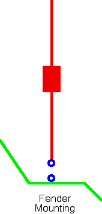
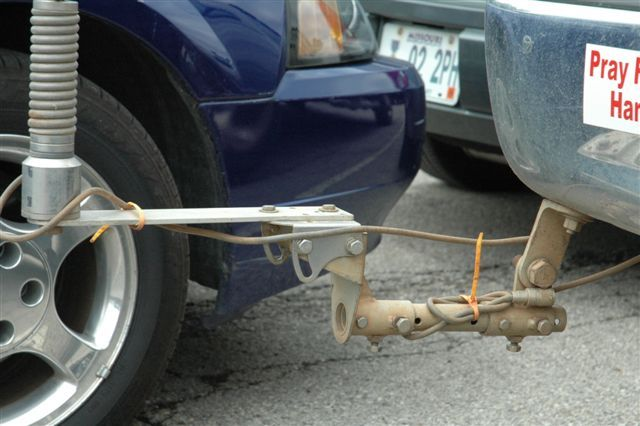

<img> as data-original-src.
Contents: Basics; What Is A Ground Plane?; Your Average Vehicle; Mounting Location Issues; Odds & Ends;
Many amateurs harbor the notion that DC grounding an antenna mount will magically act as, or replace, a ground Plane. It will not! It may DC ground the antenna's base, and it just might RF ground it too depending on the straps length and width versus the frequency of operation. However, it is by no means a replacement for an adequate ground plane under the antenna! Incidentally, the term ground plane is a bit of a misnomer (see next section).
The body of the vehicle and the capacitive coupling to the surface under the vehicle, is acting as a ground plane, and a lossy one at that! Typical ground plane losses vary between 2 and 10 ohms, 10 through 80 meters respectively, but in the real world they may be as high as 20Ω on 80 meters. It is also possible to have higher ground losses on 40 meters, than on 80 meters. The primary cause are standing waves between the body of the vehicle, and the surface under it. This fact should not be confused with the term SWR!
Since ground losses dominate the efficiency equation, decreasing them by just one ohm, can make a significant increase in ERP (effective radiated power). And be advised, ground loss cannot be measured with a common ohmmeter or determined by measuring the input impedance of your antenna!
Further, excessive ground losses directly relate to the level of common mode currents. Common mode current causes all sorts of RFI issues, both ingress and egress, and a can drastically reduce the receiver's SNR. Put another way, excessive ground losses can turn an otherwise efficient antenna system into an also-ran.
In a mobile scenario, there is one other ground we need to concern ourselves with, and that's a proper RF ground return for the coax shield. Remember, RF must flow back to its source. It will do so in the shortest path it can find (the one with the least resistance). Ideally that's within the coax cable. However, improper mounting (atop long posts, extended brackets, magnet mounts, clamps, and luggage racks) causes an inordinate amount of RF to flow on the outside of the coax (common mode current), or down inadequately-choked motor control leads if so equipped. Incidentally, common mode current flow is the main cause for both egress and ingress RFI.
A vertical antenna is nothing more than half of a dipole. A monopole in other words. However, since RF must return to its source, we need something to replace the missing half. It is what we call this missing half, that is at issue.
In a base station installation, we typically have a radial field. That radial field can have a variety of different configurations, depending on the specific installation. But we don't have that luxury in a mobile. So if we don't have a radial field, what do we have?

Is the ground in question a DC ground, an RF ground, or a Ground Plane? The truth is, it can be any or all, which leads far too many to confuse one type of ground with the others! This is, in fact, the crux of the problem; What is a Ground Plane?
Well, DC and RF grounds are easily explained, and the ARRL Handbook does a marvelous job of doing so. But how do we best describe a (mobile) Ground Plane? It certainly isn't a counterpoise, although a lot of folks use that term. It isn't a radial field or a ground strap to the nearest hard point either—a common, but incorrect assumption!
So the original question is still in limbo; How do we best describe the elusive missing half of our monopole? Perhaps if we look at the issue from a bit different angle, the term Ground Plane might not be such a wishy-washy term after all.
Webster defines a plane, as a flat and level, horizontal surface. Whether we're talking about a radial field, or the body of a vehicle, that description fits! For example, one rule we need to follow, is to place as much metal mass directly under our vertical antenna as possible, like the drawing at left depicts (what's along side doesn't count!). In fact, this is exactly what a radial field does—place lots of metal directly under the antenna! The missing half, in other words! And we also need to make sure the coax's shield (ground) connection is congruent with the start of this flat and level, horizontal surface. Hence the term Ground Plane, or more correctly, Grounds Plane isn't so far fetched after all.
First of all, there isn't an average vehicle. In fact, between two, otherwise identical vehicles, there can be a great difference in the amount, type, and severity of RFI. For example, the egressed ignition RFI of one may be S9, an the other an S2. Even minor annoyances like fuel pump and AC fan hash vary greatly from model to model. They are, after all, screwed together! The same can be said of ingress, especially to sound systems.
Secondly, the suggestion that one specific model or brand is superior to another doesn't take the aforementioned facts into account. This begs the question, is one generally better than another? Well, maybe, but we have to be more specific. In this case we're speaking about ground planes, and to a lessor degree, RFI issues. With that in mind, we can make a few general statements.
As a rule, unibody vehicles exhibit less problems, both with ingress and egressed RFI. This is due mainly to the all-welded body construction. However, most still have sound insulated undercarriages for the suspension, engines, trans-axles, exhaust systems, etc., and these need to be bonded to maximize RF continuity.
It should be noted, that aluminum-bodied vehicles require special techniques during installation of amateur radio gear, especially bonding! Failure to follow manufacturer's recommendations can cause galvanic corrosion to occur. Ford Motor Company for example, has a bulletin which outlines the requisite procedures with respect to their aluminum-bodied, F-150 series. In this specific case, Ford has done the bonding for you, and no further bonding is necessary. Other manufacturer's may have different guide lines (than Ford's) which should be followed. Failure to follow these guidelines, can result in corrosion damage which is not covered under warranty! Further, under no circumstances, should the body and/or frame be used as the DC power ground return. Returns should always be directly to the battery or jump points as the case dictates, and the wiring article covers the specifics.
Whether you use a monoband antenna, or a remotely controlled multi-band one, once properly matched it will have a relatively low SWR. However, when underway the surface conductivity continually changes, as does the ground losses, and the resonant frequency of the antenna resulting in erratic changes in the SWR. This fact shouldn't cause any issues, unless you try to use an auto-coupler to correct the situation.
The best place to mount an HF mobile antenna, is in the center of the roof. This places it as far away from the surface the vehicle is sitting on, and as far away from the vertical surfaces of the vehicle as possible. With respect to system losses, any other position on the vehicle will exhibit more loss. And as stated above, DC or RF round straps will not negate this premise!
The individual parts—the antenna, the vehicle and the surface it's atop—should be viewed as a system! Change one, and you change them all. This fact is why proper bonding and mounting are of prime importance. The issue is to make all of the bolted on pieces as RF congruent as we can—it makes little difference if it is DC congruent!
To restate the above, low mounting heights increase ground losses. The reason is, a goodly portion of the return current is forced to flow in the lossy surface under the vehicle, rather than through the vehicle's less lossy superstructure. How much affect this has on efficiency depends on a lot of factors, especially the quality of the antenna itself (coil Q, overall length, cap hat use, etc.). Remember the key to maximum efficiency is placing as much metal mass directly under the antenna as possible! That certainly isn't the case in the right photo!

Some misguided mobile operators believe that adding a "counterpoise" to their mobile antenna will increase efficiency. This so-called counterpoise (a misnomer to be sure), is typically in the form of a spirally-wound, ham-stick-type antenna. The truth is, it is a waste of resources, as the effectiveness is so slight, you couldn't measure it with laboratory-grade equipment! The same can be said of "V" configurations of two identical mobile antennas.
Further, adding wires across the bed opening of a pickup, or running a ground strap around the frame, are inane and ineffective solutions to proper mounting of antennas! If you think it is, here is something to consider: A Greyhound bus exhibits about the same ground loss as an average passenger vehicle.
{kind=link}
{kind=link}
{kind=link}